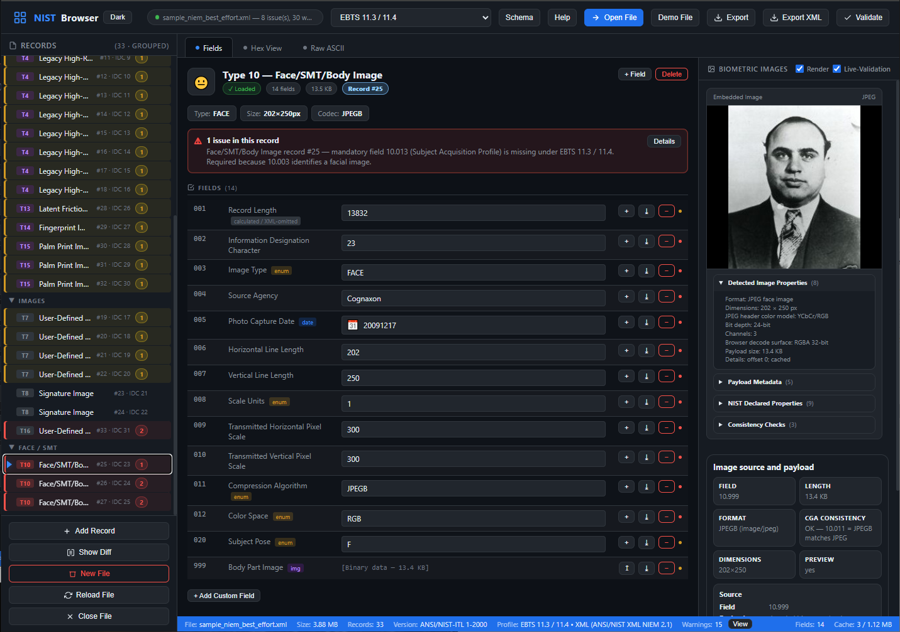
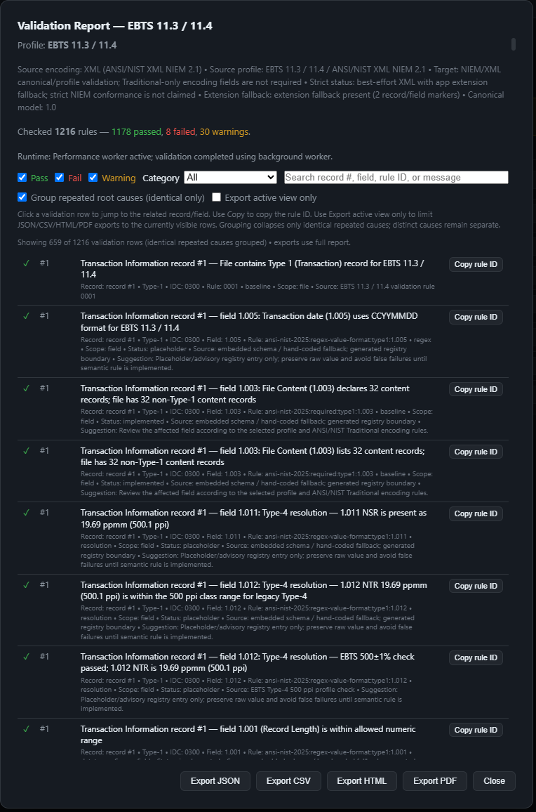
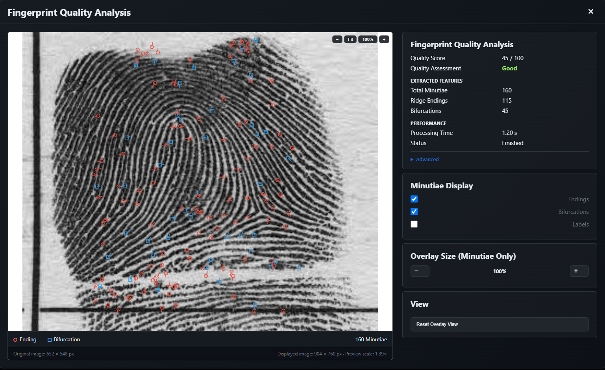

View & edit
Open Traditional ANSI/NIST records, edit supported fields, preserve binary payloads and maintain lossless round trips.
NIST Editor by Adrian Stoica (nadrianstoica) is a Windows desktop application for viewing, editing, validating, converting and analyzing ANSI/NIST-ITL biometric files, including fingerprint, facial, iris and other biometric records.

Inspect records, preserve payloads, validate standards constraints and analyze fingerprint quality from one desktop tool.
Open Traditional ANSI/NIST records, edit supported fields, preserve binary payloads and maintain lossless round trips.
Check mandatory fields, formats, code tables, image metadata, record relationships and profile-specific constraints.
Work with Traditional ANSI/NIST and XML representations, including Traditional ↔ XML conversion.
Run local fingerprint quality analysis with quality scores, minutiae statistics and image overlays.
Decode and inspect WSQ, JPEG, JPEG 2000, PNG, BMP, TIFF, JPEG-LS, DICOM and raw raster formats.
Biometric records remain local. Decoding, validation and quality analysis do not require cloud processing.
Built-in knowledge for multiple biometric standards and implementation profiles, with contextual validation and repair guidance where applicable.


Evaluate fingerprint quality locally and inspect the analysis visually over the decoded image used for processing.
NIST Editor operates completely offline. No biometric record needs to be sent to an external service for decoding, editing, validation or quality analysis.
Public downloads are Windows executable builds distributed through GitHub Releases.